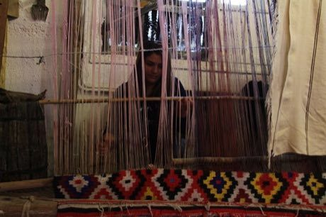
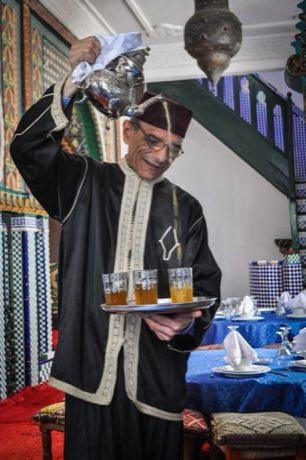
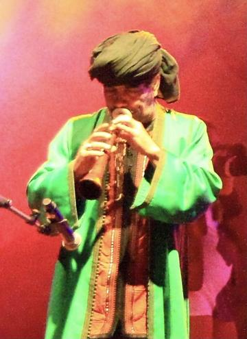

Home / Living Traditions / Mediterranean
Playable heritage gameAmazigh Rug Weaving
Also known as azetta, Beni Ourain
Amazigh women of the Moroccan Atlas weave wool rugs on upright looms, building diamonds, zigzags and lozenges in rust, ochre, indigo and ivory. Many pieces are flat-woven, with the weft packed down by a wooden comb, and the design grows row by row.

How to play
- Study the reference rug and its named wool colours.
- Choose a wool colour and a woven shape, then place it on the loom; its half-turn partner appears at once.
- Press Check to compare your rug with the reference and earn up to three stars.
Rules at a glance
- Each stamp pairs a shape with a wool colour; both must match the reference for a cell to count.
- The rug is symmetric under a half turn: placing a cell also weaves its partner on the opposite side.
- Placing the same shape and colour again, or using the eraser, removes the cell and its partner.
- Score is matching cells divided by cells filled in either rug: 98 percent for three stars, 85 for two, 60 for one.
About the tradition
Rugs and blankets woven by Amazigh (Berber) families in the Atlas mountains of Morocco are made from local wool and plant or mineral dyes, and each weaving group has its own habits of pattern and colour. The craft is handed down mostly from woman to woman.
Origins
A living tradition passed from person to person; it is not tied to a single dated origin. It belongs to the cultural world of Mediterranean.
Credits
- Photo: Adil massil, CC BY-SA 4.0, source on Wikimedia Commons
- Text: CC BY-SA 4.0, World Heritage Games.
Sources

Get the app
Amazigh Rug Weaving is one of 9 weaving and lace crafts in the Weaving & Lace of the World app for Android. Live on Google Play. One app, many traditions, no account needed.
More games to play

Persian Carpet Knotting
Iran +1 · Crafts and makingPlay preview · in the Textile Crafts of the World app
Tatreez Palestinian Cross-Stitch
Palestine +1 · Crafts and makingPlay preview · in the Textile Crafts of the World app
Sadu Bedouin ground-loom weaving
Jordan · Crafts and makingPlay preview · in the Weaving & Lace of the World app


Celtic knot weave
Ireland +1 · Crafts and makingPlay preview · in the Textile Crafts of the World app
More from Morocco


Moroccan Mint Tea High Pour
Morocco · Crafts and makingPlay preview · in the Kitchen Crafts of the World app

Tifinagh Letter Puzzle
Niger +3 · Puzzles and mind games
Krur
Morocco · Board and table games